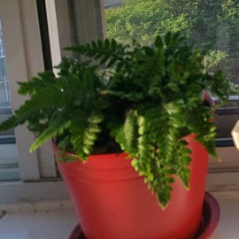
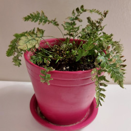
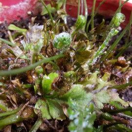
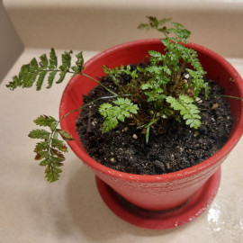
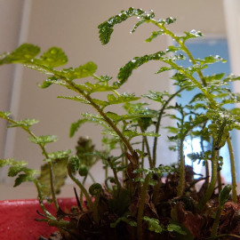
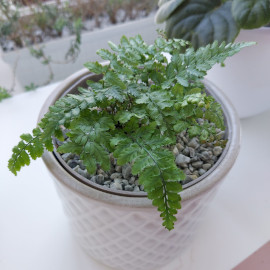
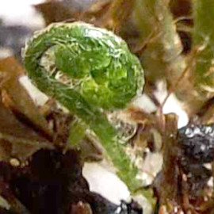

27 Aug 2021

Some old some new - 10 Dec

Fronds - 10 Dec

Some old some new - 16 Dec

Fronds - 16 DecAll new growth - Late Dec

Transferred - 23 Jan 2022Desk - 23 Jan

New growth - 19 Feb
Updates:
Purchased as seedlings between spring and fall 2021.
Dried out late November. Maybe due to low humidity and direct window sunlight. Kept in bathroom to keep the humidity high, and away from direct light. Dried out foliages were pruned away but not all at once to prevent too much shock.
It takes a few weeks, but new growth are lushy and beautiful. On 18 Dec, the last original mature foliage was sacrificed. Plant put back on the desk but far from the window.
Mid January 2022: Growing well. Transferred into a slightly larger pot. Surface covered in pebbles.
Care:
Likes high humidity: Mist everyday, water tray with pebbles. if fern looking dry and brown, might be humidity is too low.
Keep moist, don't let completely dry out. Let water run through the drainage, then wait until top soil looking a bit drier before the next watering.
Non-direct sunlight.
Fertilizer: Balanced 10-10-10, half strength every watering, or use it every 2 weeks.